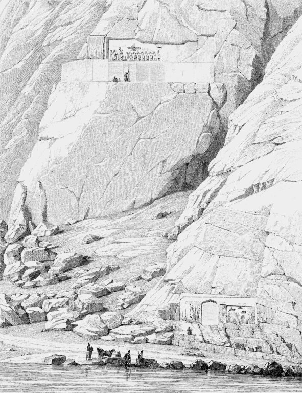

Behistun Inscription

- Find Name
- Behistun Inscription
- Description
- A multilingual royal inscription and large rock relief carved high on a cliff at Mount Behistun, Kermanshah Province, Iran, established by the Achaemenid king Darius I (reigned 522–486 BC) around 520 BC. The text, about 1,200 lines in total across Old Persian, Elamite and Babylonian versions, narrates Darius's accession and his defeat of the usurper Gaumata and nineteen rebel leaders within a single year. The monument, carved about 100 m up the cliff, was first copied by Henry Rawlinson between 1835 and 1847 and published in 1849; the work was a key to deciphering cuneiform. It remains in situ and was designated a UNESCO World Heritage site in 2006.
- Historical Period
- Persian
- Evidence Class
- Contextual
- Interpretations
- Behistun is the primary monument of Darius I, the king under whom temple work at Jerusalem resumed and was completed (Ezra 4:24; 5:1-17; 6:1-15). It illuminates the Persian administration and royal ideology of exactly the reign in which the returned exiles rebuilt. Caution: the inscription does not mention Judah or the temple — the connection is to Darius's reign, not to a biblical event directly. Also, Darius I of Ezra must not be conflated with 'Darius the Mede' of Daniel 6, a debated figure distinct from Darius I.
- Alternative Names
- Bisotun Inscription; Behistun Monument
- Related Places
- Related Books
- Related Events
- Scripture Illuminated
- Biblical Significance
- Behistun is the great self-portrait of Darius I, the Persian king whose decree let the returned exiles finish the temple (Ezra 6:1-15); it also gave scholars the key that unlocked cuneiform, opening the whole Assyrian and Babylonian record behind the Old Testament.
- Artifact Date
- c. 520 BC
- Current Location
- In situ, Mount Behistun, Iran (UNESCO World Heritage site)
- Date Discovered
- Known since antiquity; first copied 1835–47
- Discovery Location
- Mount Behistun, Kermanshah Province, Iran
- Timeline Era
- Return and Second Temple
Awaiting Review Not yet checked against scholarly sources. Treat its claims as provisional until this entry is reviewed. About verification
Sources: https://en.wikipedia.org/wiki/Behistun_inscriptions
https://www.livius.org/articles/place/behistun
https://www.livius.org/articles/place/behistun
Last reviewed: not yet reviewed